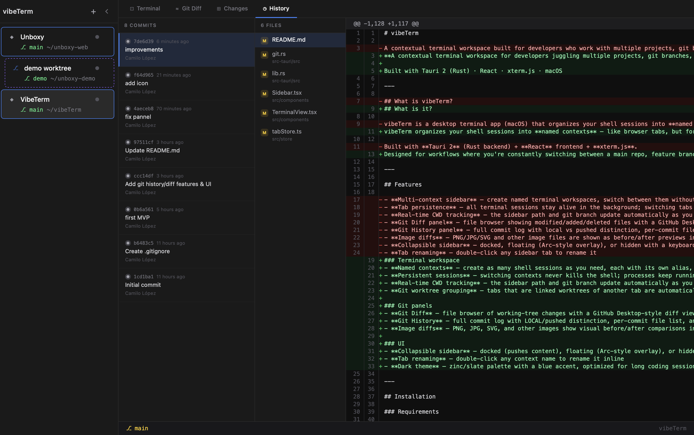
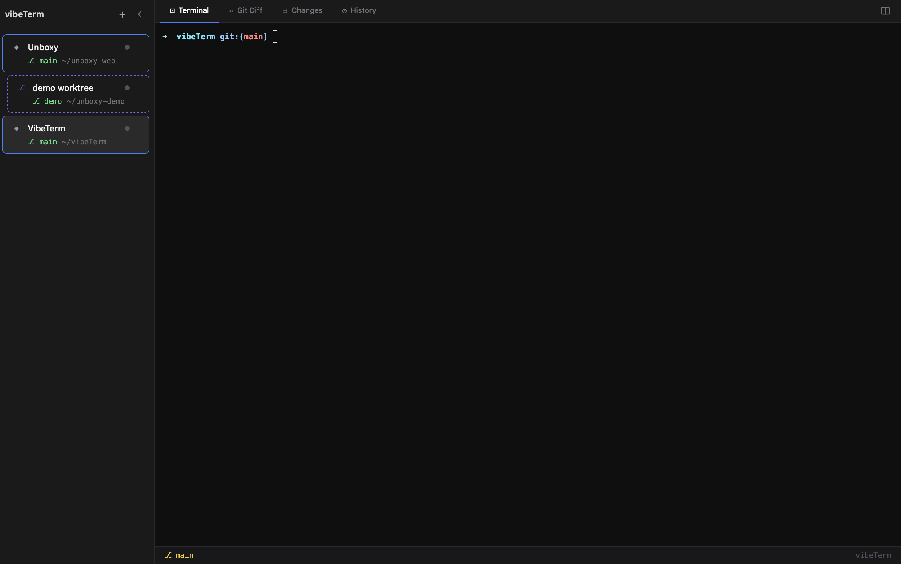
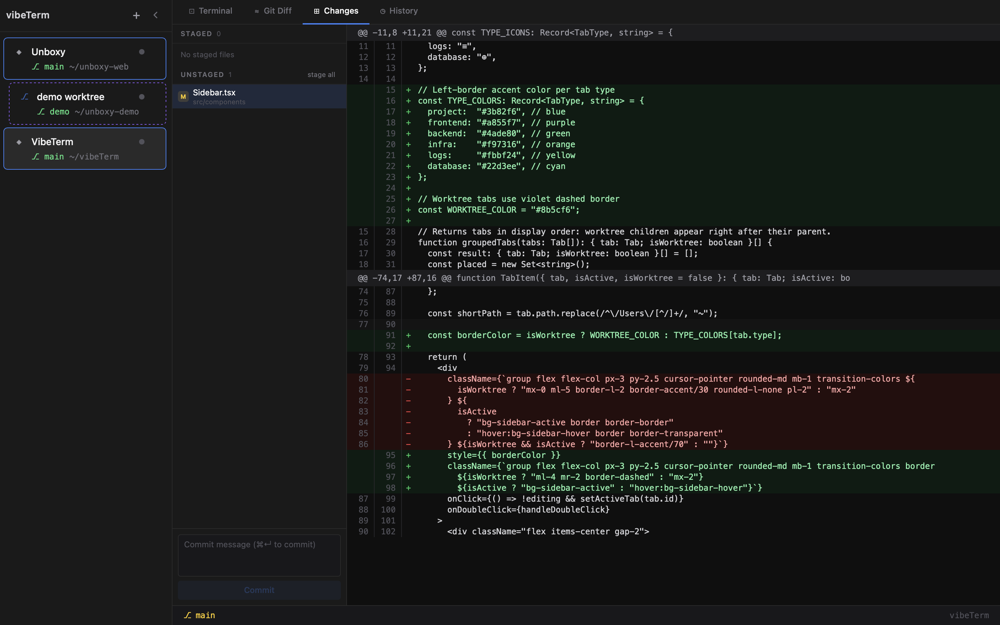

Your terminal,
organized.
Stop losing track of which terminal is on which branch. A modern developer's shell for high-context workflows.

Named Contexts
Multiple shells, each with its own alias and session state. Organize by project, task, or whim.
Persistent PTY
Switch contexts freely. Processes keep running, scroll history remains intact. No more lost output.
Live Git Tracking
Branch, path, and status update in real time as you cd through your directories.
Git Diff Viewer
GitHub Desktop-style diff with image before/after support. Review code without leaving the terminal.
Worktree Grouping
Linked worktrees auto-nest under their parent. Zero config, fully automated workspace hierarchy.
Sidebar Modes
Docked, floating (Arc-style), or hidden. Toggle with ⌘\ for a cleaner view.
Git History
A visual timeline of your commits integrated directly into your session context.

Worktree Grouping
Manage complex repository structures with automatic parent-child nesting.

Changes Panel
Stage and unstage files with side-by-side visual diffing, right in your terminal.
Create a context
vibeTerm treats your terminal instances as meaningful contexts. Give them a name, pick a root folder, and start working.
Switch freely
Use the sidebar or a keyboard shortcut to jump between active sessions. No state is lost, and long-running processes keep humming in the background.
Inspect git inline
Need to see what changed? Click any branch or commit in the sidebar to see a full visual diff right where you're already typing.
Experience terminal clarity.
Available for macOS 13.0 and newer